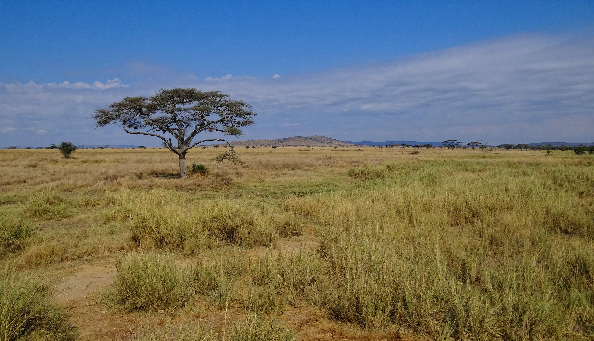
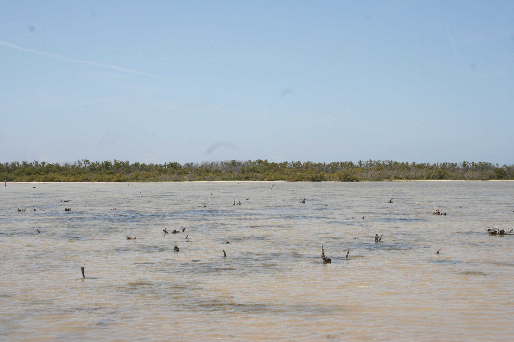

PHENOVOXEL / RESEARCH NOTES / 0.7.12
Lineages, light and the limits of a camera.
2026-11-11 · 367 archived taxa · ten additional sensory studies
Research status: published evidence motivates explicit computational hypotheses. No new animal experiment, independent peer review, subjective vision reconstruction or 95% perceptual confidence interval is claimed. Software checks establish implementation behavior only. Two microbial studies deliberately remove spatial imagery and display scalar light information.
A navigable lineage map
Every species has an interactive branch explorer with rotation, ancestor buttons, branch pagination and related-species selection. Equal branch lengths carry no evolutionary dates. Related species share the deepest group represented in this incomplete archive; ties remain ties. Rank labels and selected evolutionary clades are separate.
134 records were reconciled; 67 have class, order or family changes. Turtles and squamates now share consistent orders. Whales fall inside Artiodactyla with Cetacea retained as an infraorder under the Society for Marine Mammalogy convention. Modern WoRMS classes are applied consistently to the reviewed marine invertebrates. Stored historical provider values remain intact.
3 records still have no assigned order in the selected current authority. Lymnaea, Stagnicola and Planorbarius retain Hygrophila as a superorder; it is not silently promoted to an order. A missing rank does not mean unknown ancestry.
Decisions and original ranks · Retrieved authority responses · Mammal classification convention · Reptile Database
| Taxon | Rank change | Authority and reason |
|---|
| tursiops truncatus | order: Cetacea → Artiodactyla | Society for Marine Mammalogy convention: whales nested in Artiodactyla; Cetacea provisionally an infraorder. |
| megaptera novaeangliae | order: Cetacea → Artiodactyla | Society for Marine Mammalogy convention: whales nested in Artiodactyla; Cetacea provisionally an infraorder. |
| amphiprion ocellaris | class: Teleostei → Actinopterygii | Normalize ray-finned-fish navigation to Actinopterygii; Teleostei retained as an unranked lineage within it. Order follows stored source concept, not a new fish-systematics revision. |
| danio rerio | class: Teleostei → Actinopterygii | Normalize ray-finned-fish navigation to Actinopterygii; Teleostei retained as an unranked lineage within it. Order follows stored source concept, not a new fish-systematics revision. |
| acropora cervicornis | class: Anthozoa → Hexacorallia | Live WoRMS/MolluscaBase ranked hierarchy; absent ranks remain unassigned, not guessed. |
| porites porites | class: Anthozoa → Hexacorallia | Live WoRMS/MolluscaBase ranked hierarchy; absent ranks remain unassigned, not guessed. |
| gorgonia ventalina | class: Anthozoa → Octocorallia | Live WoRMS/MolluscaBase ranked hierarchy; absent ranks remain unassigned, not guessed. |
| metridium senile | class: Anthozoa → Hexacorallia | Live WoRMS/MolluscaBase ranked hierarchy; absent ranks remain unassigned, not guessed. |
| actinia equina | class: Anthozoa → Hexacorallia | Live WoRMS/MolluscaBase ranked hierarchy; absent ranks remain unassigned, not guessed. |
| anemonia viridis | class: Anthozoa → Hexacorallia | Live WoRMS/MolluscaBase ranked hierarchy; absent ranks remain unassigned, not guessed. |
| actinia fragacea | class: Anthozoa → Hexacorallia | Live WoRMS/MolluscaBase ranked hierarchy; absent ranks remain unassigned, not guessed. |
| metridium farcimen | class: Anthozoa → Hexacorallia | Live WoRMS/MolluscaBase ranked hierarchy; absent ranks remain unassigned, not guessed. |
| bunodosoma cavernatum | class: Anthozoa → Hexacorallia | Live WoRMS/MolluscaBase ranked hierarchy; absent ranks remain unassigned, not guessed. |
| patella vulgata | order: unassigned → Patellida | Live WoRMS/MolluscaBase ranked hierarchy; absent ranks remain unassigned, not guessed. |
| nacella concinna | order: unassigned → Nacellida | Live WoRMS/MolluscaBase ranked hierarchy; absent ranks remain unassigned, not guessed. |
| anthopleura elegantissima | class: Anthozoa → Hexacorallia | Live WoRMS/MolluscaBase ranked hierarchy; absent ranks remain unassigned, not guessed. |
| anthopleura xanthogrammica | class: Anthozoa → Hexacorallia | Live WoRMS/MolluscaBase ranked hierarchy; absent ranks remain unassigned, not guessed. |
| stichodactyla gigantea | class: Anthozoa → Hexacorallia | Live WoRMS/MolluscaBase ranked hierarchy; absent ranks remain unassigned, not guessed. |
| radianthus magnifica | class: Anthozoa → Hexacorallia | Live WoRMS/MolluscaBase ranked hierarchy; absent ranks remain unassigned, not guessed. |
| cerianthus membranaceus | class: Anthozoa → Hexacorallia
order: unassigned → Ceriantharia | Live WoRMS/MolluscaBase ranked hierarchy; absent ranks remain unassigned, not guessed. |
| cladocora caespitosa | class: Anthozoa → Hexacorallia | Live WoRMS/MolluscaBase ranked hierarchy; absent ranks remain unassigned, not guessed. |
| tubastraea coccinea | class: Anthozoa → Hexacorallia | Live WoRMS/MolluscaBase ranked hierarchy; absent ranks remain unassigned, not guessed. |
| orcinus orca | order: Cetacea → Artiodactyla | Society for Marine Mammalogy convention: whales nested in Artiodactyla; Cetacea provisionally an infraorder. |
| balaenoptera musculus | order: Cetacea → Artiodactyla | Society for Marine Mammalogy convention: whales nested in Artiodactyla; Cetacea provisionally an infraorder. |
| balaenoptera physalus | order: Cetacea → Artiodactyla | Society for Marine Mammalogy convention: whales nested in Artiodactyla; Cetacea provisionally an infraorder. |
| physeter macrocephalus | order: Cetacea → Artiodactyla | Society for Marine Mammalogy convention: whales nested in Artiodactyla; Cetacea provisionally an infraorder. |
| eubalaena glacialis | order: Cetacea → Artiodactyla | Society for Marine Mammalogy convention: whales nested in Artiodactyla; Cetacea provisionally an infraorder. |
| eubalaena australis | order: Cetacea → Artiodactyla | Society for Marine Mammalogy convention: whales nested in Artiodactyla; Cetacea provisionally an infraorder. |
| eubalaena japonica | order: Cetacea → Artiodactyla | Society for Marine Mammalogy convention: whales nested in Artiodactyla; Cetacea provisionally an infraorder. |
| caperea marginata | order: Cetacea → Artiodactyla | Society for Marine Mammalogy convention: whales nested in Artiodactyla; Cetacea provisionally an infraorder. |
| balaena mysticetus | order: Cetacea → Artiodactyla | Society for Marine Mammalogy convention: whales nested in Artiodactyla; Cetacea provisionally an infraorder. |
| balaenoptera borealis | order: Cetacea → Artiodactyla | Society for Marine Mammalogy convention: whales nested in Artiodactyla; Cetacea provisionally an infraorder. |
| eschrichtius robustus | order: Cetacea → Artiodactyla | Society for Marine Mammalogy convention: whales nested in Artiodactyla; Cetacea provisionally an infraorder. |
| balaenoptera acutorostrata | order: Cetacea → Artiodactyla | Society for Marine Mammalogy convention: whales nested in Artiodactyla; Cetacea provisionally an infraorder. |
| balaenoptera bonaerensis | order: Cetacea → Artiodactyla | Society for Marine Mammalogy convention: whales nested in Artiodactyla; Cetacea provisionally an infraorder. |
| balaenoptera ricei | order: Cetacea → Artiodactyla | Society for Marine Mammalogy convention: whales nested in Artiodactyla; Cetacea provisionally an infraorder. |
| balaenoptera edeni | order: Cetacea → Artiodactyla | Society for Marine Mammalogy convention: whales nested in Artiodactyla; Cetacea provisionally an infraorder. |
| balaenoptera omurai | order: Cetacea → Artiodactyla | Society for Marine Mammalogy convention: whales nested in Artiodactyla; Cetacea provisionally an infraorder. |
| monodon monoceros | order: Cetacea → Artiodactyla | Society for Marine Mammalogy convention: whales nested in Artiodactyla; Cetacea provisionally an infraorder. |
| globicephala melas | order: Cetacea → Artiodactyla | Society for Marine Mammalogy convention: whales nested in Artiodactyla; Cetacea provisionally an infraorder. |
| globicephala macrorhynchus | order: Cetacea → Artiodactyla | Society for Marine Mammalogy convention: whales nested in Artiodactyla; Cetacea provisionally an infraorder. |
| delphinapterus leucas | order: Cetacea → Artiodactyla | Society for Marine Mammalogy convention: whales nested in Artiodactyla; Cetacea provisionally an infraorder. |
| kogia breviceps | order: Cetacea → Artiodactyla | Society for Marine Mammalogy convention: whales nested in Artiodactyla; Cetacea provisionally an infraorder. |
| grampus griseus | order: Cetacea → Artiodactyla | Society for Marine Mammalogy convention: whales nested in Artiodactyla; Cetacea provisionally an infraorder. |
| inia geoffrensis | order: Cetacea → Artiodactyla | Society for Marine Mammalogy convention: whales nested in Artiodactyla; Cetacea provisionally an infraorder. |
| delphinus delphis | order: Cetacea → Artiodactyla | Society for Marine Mammalogy convention: whales nested in Artiodactyla; Cetacea provisionally an infraorder. |
| stenella longirostris | order: Cetacea → Artiodactyla | Society for Marine Mammalogy convention: whales nested in Artiodactyla; Cetacea provisionally an infraorder. |
| stenella coeruleoalba | order: Cetacea → Artiodactyla | Society for Marine Mammalogy convention: whales nested in Artiodactyla; Cetacea provisionally an infraorder. |
| orcaella brevirostris | order: Cetacea → Artiodactyla | Society for Marine Mammalogy convention: whales nested in Artiodactyla; Cetacea provisionally an infraorder. |
| ziphius cavirostris | order: Cetacea → Artiodactyla | Society for Marine Mammalogy convention: whales nested in Artiodactyla; Cetacea provisionally an infraorder. |
| hyperoodon ampullatus | order: Cetacea → Artiodactyla | Society for Marine Mammalogy convention: whales nested in Artiodactyla; Cetacea provisionally an infraorder. |
| mesoplodon densirostris | order: Cetacea → Artiodactyla | Society for Marine Mammalogy convention: whales nested in Artiodactyla; Cetacea provisionally an infraorder. |
| kogia sima | order: Cetacea → Artiodactyla | Society for Marine Mammalogy convention: whales nested in Artiodactyla; Cetacea provisionally an infraorder. |
| varanus komodoensis | class: Squamata → Reptilia
order: unassigned → Squamata | Reptile Database conventional ranks: Reptilia class; Testudines, Squamata and Crocodylia orders. Evolutionary tree includes birds within Sauropsida. |
| gekko gecko | class: Squamata → Reptilia
order: unassigned → Squamata | Reptile Database conventional ranks: Reptilia class; Testudines, Squamata and Crocodylia orders. Evolutionary tree includes birds within Sauropsida. |
| chrysemys picta | class: Testudines → Reptilia
order: unassigned → Testudines | Reptile Database conventional ranks: Reptilia class; Testudines, Squamata and Crocodylia orders. Evolutionary tree includes birds within Sauropsida. |
| caretta caretta | class: Testudines → Reptilia
order: unassigned → Testudines | Reptile Database conventional ranks: Reptilia class; Testudines, Squamata and Crocodylia orders. Evolutionary tree includes birds within Sauropsida. |
| eretmochelys imbricata | class: Testudines → Reptilia
order: unassigned → Testudines | Reptile Database conventional ranks: Reptilia class; Testudines, Squamata and Crocodylia orders. Evolutionary tree includes birds within Sauropsida. |
| lepidochelys kempii | class: Testudines → Reptilia
order: unassigned → Testudines | Reptile Database conventional ranks: Reptilia class; Testudines, Squamata and Crocodylia orders. Evolutionary tree includes birds within Sauropsida. |
| natator depressus | class: Testudines → Reptilia
order: unassigned → Testudines | Reptile Database conventional ranks: Reptilia class; Testudines, Squamata and Crocodylia orders. Evolutionary tree includes birds within Sauropsida. |
| dermochelys coriacea | class: Testudines → Reptilia
order: unassigned → Testudines | Reptile Database conventional ranks: Reptilia class; Testudines, Squamata and Crocodylia orders. Evolutionary tree includes birds within Sauropsida. |
| phocoena phocoena | order: Cetacea → Artiodactyla | Society for Marine Mammalogy convention: whales nested in Artiodactyla; Cetacea provisionally an infraorder. |
| anguilla rostrata | class: unassigned → Actinopterygii | Normalize ray-finned-fish navigation to Actinopterygii; Teleostei retained as an unranked lineage within it. Order follows stored source concept, not a new fish-systematics revision. |
| lepomis macrochirus | class: unassigned → Actinopterygii | Normalize ray-finned-fish navigation to Actinopterygii; Teleostei retained as an unranked lineage within it. Order follows stored source concept, not a new fish-systematics revision. |
| lepisosteus osseus | class: unassigned → Actinopterygii | Normalize ray-finned-fish navigation to Actinopterygii; Teleostei retained as an unranked lineage within it. Order follows stored source concept, not a new fish-systematics revision. |
| acipenser oxyrinchus | class: unassigned → Actinopterygii | Normalize ray-finned-fish navigation to Actinopterygii; Teleostei retained as an unranked lineage within it. Order follows stored source concept, not a new fish-systematics revision. |
| gloydius blomhoffii | class: Squamata → Reptilia
order: unassigned → Squamata | Reptile Database conventional ranks: Reptilia class; Testudines, Squamata and Crocodylia orders. Evolutionary tree includes birds within Sauropsida. |
Ten evidence-linked experiments
All ten were already present as modeled archive taxa. Habitat photos are context, not organism-eye captures. Ordinary RGB cannot recover UV, polarization, sonar, spectral reflectance or intracellular signals. Existing studies retain their licensed habitat library; all unsupported channels stay under maintenance.
Loxodonta africana · Vision study
Two cone pigments in a savanna landscape
Evidence: Reconstituted elephant cone pigments peak near 419 and 552 nm; a rod pigment peaks near 496 nm.
Computational hypothesis: Blue–green camera proxy plus separate nominal A1 pigment calculation at 419/552 nm. Screen yellow/blue is a convention, not elephant color naming.
Limits: Camera green is not the 552 nm cone. Rod contributions, retinal wiring, ocular filtering and brightness discrimination are not fitted.
Validation needed: Measure calibrated spectra and brightness-controlled behavior, with independent animals and stimuli.
Yokoyama et al. (2005) · Elephant visual pigments · Govardovskii et al. (2000) · Visual pigment templates
Ambystoma mexicanum · Vision study
A UV channel the camera cannot supply
Evidence: Species-specific eye-cup recordings found ultraviolet sensitivity near 360–370 nm.
Computational hypothesis: Keep RGB untouched. Calculate hypothetical UV Michelson contrast (target − background)/(target + background) from user-assigned reflectances under equal illumination.
Limits: No UV pattern is painted onto the photograph. UV reflectance and illumination are unmeasured; retinal sensitivity is not a behavioral color-discrimination result.
Validation needed: Use independently measured UV spectra and ocular transmission, then test brightness-controlled discrimination. A normal phone cannot perform the required UV measurement.
Deutschlander & Phillips (1995) · Axolotl ultraviolet photoreception
Anguilla rostrata · Vision study
Adaptation changes which retinal signal dominates
Evidence: American eel eyecup studies found rod-dominated anatomy and different dark-adapted and flicker spectral sensitivities.
Computational hypothesis: Blend linear RGB toward its luminance by an assigned weight. Show the reported 520/550 nm assay peaks separately; do not interpolate them into an invented pigment curve.
Limits: The weight is not a measured rod/cone contribution or migration stage. A2 chromophore effects, neural adaptation and underwater spectra are not fitted.
Validation needed: Separate stage, adaptation, irradiance and chromophore composition; fit trial-level data before predicting percepts.
Gordon et al. (1978) · The eel retina: receptor classes and spectral mechanisms
Leptuca pugilator · Vision study
An eye organized around the horizon
Evidence: Work published as Uca pugilator measured enhanced vertical sampling around the horizon and elevation-dependent responses to moving targets.
Computational hypothesis: Retain an assigned horizontal band. Outside it, average linear RGB vertically, leaving horizontal sampling intact. Horizon location and band width are manually assigned.
Limits: The photograph is not at crab eye height. No 360° reconstruction, measured optical kernel, predator classification or automatic horizon detection is claimed.
Validation needed: Fit eye geometry and pseudopupil measurements, then test independent target elevations and contrasts.
Land & Layne (1995) · Resolution and the horizon in Uca pugilator
Callinectes sapidus · Vision study
Color as a social signal
Evidence: Behavioral experiments using female images and brightness comparisons support a role for claw hue in male mate choice.
Computational hypothesis: Vary chromatic information while preserving linear sRGB luminance. This is a stimulus-control experiment; the default habitat is an untransformed RGB reference.
Limits: Device luminance is not crab isoluminance. No mate choice, spectral sensitivity or exact perceived claw color is predicted. Chemical and movement cues are absent.
Validation needed: Use species receptor spectra and brightness controls, then independent behavioral choices. Do not call RGB desaturation a crab-eye reconstruction.
Baldwin & Johnsen (2009) · Blue crab mate choice and color
Nephrops norvegicus · Vision study
Wide acceptance angles in a superposition eye
Evidence: Submerged retinula-cell measurements reported 11.3° acceptance angles in dark adaptation and 8.85° in light adaptation.
Computational hypothesis: Use the selected reported angle as a square box-pooling width in an assigned field of view. Box pooling is an explanatory surrogate, not the measured angular sensitivity function.
Limits: No hexagonal mosaic, mirror ray tracing, biological noise or behavioral acuity is reconstructed. Acceptance angle and receptor spacing must remain distinct.
Validation needed: Obtain angular sensitivity curves and eye geometry, fit a point-spread function, then test held-out behavioral contrast thresholds.
Shelton & Gaten (1996) · Submerged crustacean acceptance angles
Phocoena phocoena · Vision study
The underwater cornea contributes optical power
Evidence: A two-eye anatomical study and 2D ray model found direction-dependent refraction; the cornea helped counteract the strong crystalline lens.
Computational hypothesis: Paraxial illustrative angular blur diameter ≈ pupil diameter in metres × absolute defocus, in radians. Convert to degrees and box-pool at an assigned field of view.
Limits: This is not a porpoise ray trace or a measured live-eye blur. Corneal geometry, astigmatism, accommodation and visual direction are omitted. No echolocation image is inferred.
Validation needed: Fit measured eye surfaces and refractive indices; compare independent live-animal refraction and visual discrimination.
Kröger & Kirschfeld (1993) · Harbor porpoise optics in water
Caretta caretta · Vision study
Behavior demonstrates wavelength discrimination
Evidence: Juvenile loggerheads discriminated trained 450, 500 and 580 nm stimuli with intensity controls.
Computational hypothesis: Preserve linear sRGB luminance while varying saturation. This tests image information, not turtle cone responses. RGB habitat remains the neutral starting reference.
Limits: The training wavelengths are stimuli, not pigment peaks. No subjective palette, adult generalization, measured color gamut or detection distance is inferred.
Validation needed: Use calibrated target spectra and age-matched, brightness-controlled independent behavioral trials.
Young, Salmon & Forward (2012) · Loggerhead wavelength discrimination
Chlamydomonas reinhardtii · Non-image-forming photoreception
Light direction without a picture
Evidence: Channelrhodopsin-dependent currents and phototaxis have been measured in this unicellular green alga.
Computational hypothesis: Collapse camera green to a mean linear value. Multiply by (1 + screening × cos(angle))/(1 + screening). Show a uniform intensity field: a scalar information diagram, never an algal scene.
Limits: Camera green is a rough input proxy, not channelrhodopsin excitation. Eyespot optics, action spectra, photocurrents, swimming and adaptation are not fitted.
Validation needed: Fit measured angular responses and currents, then predict independent trajectories. Photon flux and membrane voltage require measurements beyond a phone RGB camera.
Sineshchekov, Jung & Spudich (2002) · Two rhodopsins mediate algal phototaxis · Berthold et al. (2008) · Channelrhodopsin-1 and algal depolarization
Euglena gracilis · Non-image-forming photoreception
A blue-light step can trigger signaling
Evidence: Photoactivated adenylyl cyclase was linked to the step-up photophobic response in Euglena gracilis.
Computational hypothesis: Calculate max(0, later − prior) from assigned relative blue inputs. Camera blue is spatially averaged and shown as a uniform field; the separate step is hypothetical, not a measured cellular response.
Limits: No image-forming eye, cAMP concentration, response probability or avoidance trajectory is predicted. Phone exposure changes can mimic light changes.
Validation needed: Fit calibrated irradiance, PAC activity and independent behavioral time series; distinguish photophobic steps from continuous phototaxis.
Iseki et al. (2002) · Blue-light-activated adenylyl cyclase
Downloaded artist model, with an identity caveat
The user-supplied “Reindeer 3D” by soufiane oujihi is now available locally in the viewer under CC BY 4.0. Embedded surface textures are retained. A standard glTF material conversion replaces unsupported legacy specular/glossiness materials; geometry and UV accessor hashes were unchanged. The orientation was aligned with the viewer presets.
This is not a verified Rangifer specimen. The artist asset has generalized deer proportions and antlers. Its species identity, sex, anatomy and coat are not independently established. It is explicitly a provisional exterior reference, with movement still pending. It must not be used as evidence for reindeer morphology or physiology.
Artist source · CC BY 4.0 · Asset provenance
Additional habitat photographs

Serengeti grassland in Tanzania, 2012. Elephant habitat context, not an animal-eye recording. Original photographic content retained.
Bjørn Christian Tørrissen · CC BY-SA 3.0 · Source
Flooded Florida tidal flat at Jim Foot Key, April 2019. Habitat context, not a verified Leptuca observation site or a crab eye-height photograph.
Bethany Stackhouse / USGS · Public domain · SourceOriginal photographic content is retained. Display transformations are labeled adaptations and retain the source license. Other studies use the previously credited freshwater, pond, seabed, seagrass and water-column references; camera height, locality and light calibration are not guaranteed matches.
Reproducibility and next evidence
Run node archive-analysis-v0712.mjs with the release source files to reproduce the scenario results and lineage paths. Run the repository test suite for rank nesting, preservation of source geometry/material access, image invariants, discrete literature anchors, reset behavior and existing archive regressions. Confidence intervals need a defined measured quantity, trial-level data and a fitted model; they cannot be attached to an attractive screen filter.
Fit receptor and optical models with calibrated spectra and measured eye geometry. Then test predictions against independent behavioral observations. Preserve species, life stage, adaptation, location and assay provenance. Physical iPhone/iPad camera tests and independent scientific review remain separate from desktop browser checks.